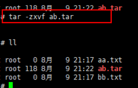
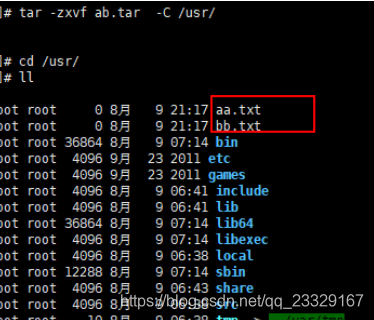

Linux的一些常用命令
————————————————
版权声明：本文为CSDN博主「Demon_gu」的原创文章，遵循CC 4.0 BY-SA版权协议，转载请附上原文出处链接及本声明。
原文链接：https://blog.csdn.net/qq_23329167/article/details/83856430/
1.1 关机和重启
关机
shutdown -h now 立刻关机
shutdown -h 5 5分钟后关机
poweroff 立刻关机
重启
shutdown -r now 立刻重启
shutdown -r 5 5分钟后重启
reboot 立刻重启
1.2 帮助命令
–help命令
shutdown –help：
ifconfig –help：查看网卡信息
man命令（命令说明书）
man shutdown
注意：man shutdown打开命令说明书之后，使用按键q退出
二、目录操作命令
2.1 目录切换 cd
命令：cd 目录
cd / 切换到根目录
cd /usr 切换到根目录下的usr目录
cd ../ 切换到上一级目录 或者 cd ..
cd ~ 切换到home目录
cd - 切换到上次访问的目录
2.2 目录查看 ls [-al]
命令：ls [-al]
ls 查看当前目录下的所有目录和文件
ls -a 查看当前目录下的所有目录和文件（包括隐藏的文件）
ls -l 或 ll 列表查看当前目录下的所有目录和文件（列表查看，显示更多信息）
ls /dir 查看指定目录下的所有目录和文件 如：ls /usr
2.3 目录操作【增，删，改，查】
2.3.1 创建目录【增】 mkdir
命令：mkdir 目录
mkdir aaa 在当前目录下创建一个名为aaa的目录
mkdir /usr/aaa 在指定目录下创建一个名为aaa的目录
2.3.2 删除目录或文件【删】rm
命令：rm [-rf] 目录
删除文件：
rm 文件 删除当前目录下的文件
rm -f 文件 删除当前目录的的文件（不询问）
删除目录：
rm -r aaa 递归删除当前目录下的aaa目录
rm -rf aaa 递归删除当前目录下的aaa目录（不询问）
全部删除：
rm -rf * 将当前目录下的所有目录和文件全部删除
rm -rf /* 【自杀命令！慎用！慎用！慎用！】将根目录下的所有文件全部删除
注意：rm不仅可以删除目录，也可以删除其他文件或压缩包，为了方便大家的记忆，无论删除任何目录或文件，都直接使用 rm -rf 目录/文件/压缩包
2.3.3 目录修改【改】mv 和 cp
一、重命名目录
命令：mv 当前目录 新目录
例如：mv aaa bbb 将目录aaa改为bbb
注意：mv的语法不仅可以对目录进行重命名而且也可以对各种文件，压缩包等进行 重命名的操作
二、剪切目录
命令：mv 目录名称 目录的新位置
示例：将/usr/tmp目录下的aaa目录剪切到 /usr目录下面 mv /usr/tmp/aaa /usr
注意：mv语法不仅可以对目录进行剪切操作，对文件和压缩包等都可执行剪切操作
三、拷贝目录
命令：cp -r 目录名称 目录拷贝的目标位置 -r代表递归
示例：将/usr/tmp目录下的aaa目录复制到 /usr目录下面 cp /usr/tmp/aaa /usr
注意：cp命令不仅可以拷贝目录还可以拷贝文件，压缩包等，拷贝文件和压缩包时不 用写-r递归
2.3.4 搜索目录【查】find
命令：find 目录 参数 文件名称
示例：find /usr/tmp -name ‘a*’ 查找/usr/tmp目录下的所有以a开头的目录或文件
三、文件操作命令
3.1 文件操作【增，删，改，查】
3.1.1 新建文件【增】touch
命令：touch 文件名
示例：在当前目录创建一个名为aa.txt的文件 touch aa.txt
3.1.2 删除文件 【删】 rm
命令：rm -rf 文件名
3.1.3 修改文件【改】 vi或vim
【vi编辑器的3种模式】
基本上vi可以分为三种状态，分别是命令模式（command mode）、插入模式（Insert mode）和底行模式（last line mode），各模式的功能区分如下：
- 命令行模式command mode）
控制屏幕光标的移动，字符、字或行的删除，查找，移动复制某区段及进入Insert mode下，或者到 last line mode。
命令行模式下的常用命令：
【1】控制光标移动：↑，↓，j
【2】删除当前行：dd
【3】查找：/字符
【4】进入编辑模式：i o a
【5】进入底行模式：: - 编辑模式（Insert mode）
只有在Insert mode下，才可以做文字输入，按「ESC」键可回到命令行模式。
编辑模式下常用命令：
【1】ESC 退出编辑模式到命令行模式； - 底行模式（last line mode）
将文件保存或退出vi，也可以设置编辑环境，如寻找字符串、列出行号……等。
底行模式下常用命令：
【1】退出编辑： :q
【2】强制退出： :q!
【3】保存并退出： :wq
打开文件
命令：vi 文件名
示例：打开当前目录下的aa.txt文件 vi aa.txt 或者 vim aa.txt
注意：使用vi编辑器打开文件后，并不能编辑，因为此时处于命令模式，点击键盘i/a/o进入编辑模式。
编辑文件
使用vi编辑器打开文件后点击按键：i ，a或者o即可进入编辑模式。
i:在光标所在字符前开始插入
a:在光标所在字符后开始插入
o:在光标所在行的下面另起一新行插入
保存或者取消编辑
保存文件：
第一步：ESC 进入命令行模式
第二步：: 进入底行模式
第三步：wq 保存并退出编辑
取消编辑：
第一步：ESC 进入命令行模式
第二步：: 进入底行模式
第三步：q! 撤销本次修改并退出编辑
3.1.4 文件的查看【查】
文件的查看命令：cat/more/less/tail
cat：看最后一屏
示例：使用cat查看/etc/sudo.conf文件，只能显示最后一屏内容
cat sudo.conf
more：百分比显示
示例：使用more查看/etc/sudo.conf文件，可以显示百分比，回车可以向下一行，空格可以向下一页，q可以退出查看
more sudo.conf
less：翻页查看
示例：使用less查看/etc/sudo.conf文件，可以使用键盘上的PgUp和PgDn向上 和向下翻页，q结束查看
less sudo.conf
tail：指定行数或者动态查看
示例：使用tail -10 查看/etc/sudo.conf文件的后10行，Ctrl+C结束
tail -10 sudo.conf
3.2 权限修改
rwx：r代表可读，w代表可写，x代表该文件是一个可执行文件，如果rwx任意位置变为-则代表不可读或不可写或不可执行文件。
示例：给aaa.txt文件权限改为可执行文件权限，aaa.txt文件的权限是-rw——-
第一位：-就代表是文件，d代表是文件夹
第一段（3位）：代表拥有者的权限
第二段（3位）：代表拥有者所在的组，组员的权限
第三段（最后3位）：代表的是其他用户的权限
421 421 421
- rw- — —
命令：chmod +x aaa.txt
或者采用8421法
命令：chmod 100 aaa.txt
四、压缩文件操作
4.1 打包和压缩
Windows的压缩文件的扩展名 .zip/.rar
linux中的打包文件：aa.tar
linux中的压缩文件：bb.gz
linux中打包并压缩的文件：.tar.gz
Linux中的打包文件一般是以.tar结尾的，压缩的命令一般是以.gz结尾的。
而一般情况下打包和压缩是一起进行的，打包并压缩后的文件的后缀名一般.tar.gz。
命令：tar -zcvf 打包压缩后的文件名 要打包的文件
其中：z：调用gzip压缩命令进行压缩
c：打包文件
v：显示运行过程
f：指定文件名
示例：打包并压缩/usr/tmp 下的所有文件 压缩后的压缩包指定名称为xxx.tar
tar -zcvf ab.tar aa.txt bb.txt
或：tar -zcvf ab.tar *
4.2 解压
命令：tar [-zxvf] 压缩文件
其中：x：代表解压
示例：将/usr/tmp 下的ab.tar解压到当前目录下

示例：将/usr/tmp 下的ab.tar解压到根目录/usr下
tar -xvf ab.tar -C /usr——C代表指定解压的位置
